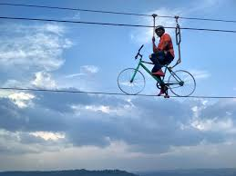
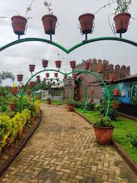
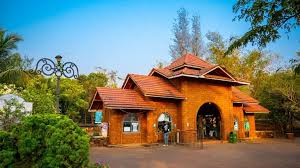
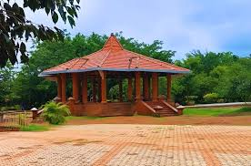
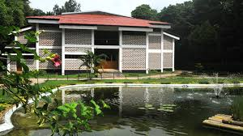
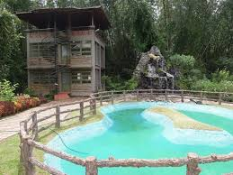
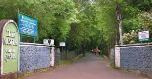

MALAPPURAM

About Malappuram
Malappuram, meaning "land on hills," is a **scenic and culturally rich district** in Kerala. It is known for **football, literature, historic mosques, and the Mappila culture**.
Malappuram at a Glance
Famous For: Hills, Temples, Mosques, Football
District: Malappuram
Best Season to Visit: October – March
Weather: Summer 26-35°C, Winter 20-30°C
How to Reach Malappuram
By Air
The nearest airport is **Calicut International Airport (CCJ)**, about **25 km from Malappuram city**.
By Train
Major railway stations: **Tirur, Angadipuram, and Nilambur Road**.
By Road
Connected via **NH-66 and NH-966**, linking to Kozhikode, Palakkad, and Coimbatore.
Top Attractions in Malappuram
Kottakkunnu

Known as the **"Marine Drive of Malappuram"**, this hilltop park offers **stunning sunset views and amusement rides**.
IMAGES GALLERY:








VIDEOS GALLERY:
Here is a vedio that might help you understand more;

Nilambur Teak Museum

The world's **first teak museum**, showcasing the **history of teak plantations and biodiversity**.
IMAGES GALLERY:







VIDEOS GALLERY:
Here is a vedio that might help you understand more;

Padinharekara Beach

A beautiful beach at the **confluence of Bharathapuzha and Tirur rivers**, offering a **serene escape**.
IMAGES GALLERY:


VIDEOS GALLERY:
Here is a vedio that might help you understand more;

Thirunavaya Navamukunda Temple

An ancient **Hindu temple** on the banks of the Bharathapuzha River, famous for **rituals and history**.
IMAGES GALLERY:
VIDEOS GALLERY:
Here is a vedio that might help you understand more;
IMAGES:


YOUTUBE VIDEOS:
Check out this video:

Must-Try Restaurants in Malappuram
- Hotel Delicia
- Paragon Malappuram
- Panghat (Best for Malabar cuisine)
- Rahmath Hotel
Best Places for Shopping
- Kottakkal Market (Famous for Ayurveda products)
- Malappuram Grand Bazaar
- Tirur Shopping Streets